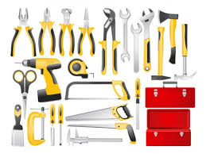

En la actualidad, el uso constante de dispositivos electrónicos como celulares, tabletas y laptops dentro de las instituciones educativas ha generado la necesidad de contar con espacios seguros y accesibles para su carga. Por ello, se propone la instalación de lockers de carga protegidos mediante candados electrónicos con detección de huella dactilar, ubicados en la planta baja, específicamente en el muro frente a los edificios B y C. Este sistema no solo brindará seguridad, sino que también incorporará el uso de energía generada a través de placas piezoeléctricas, fomentando el uso responsable de la energía.
La propuesta consiste en implementar lockers diseñados especialmente para la carga de dispositivos electrónicos. Estos lockers estarán equipados con sistemas de seguridad avanzados que funcionarán mediante la identificación de la huella dactilar del usuario, lo que permitirá evitar robos o accesos no autorizados.
Uno de los aspectos más innovadores de este proyecto es el uso de placas piezoeléctricas como fuente de energía. Estas placas tienen la capacidad de transformar la energía mecánica, como el paso de las personas, en energía eléctrica. Al ser instaladas en áreas de alto tránsito en la planta baja, permitirán generar electricidad de manera constante y sustentable.
La energía recolectada será utilizada para abastecer los lockers, garantizando un funcionamiento continuo de aproximadamente 15 horas diarias, durante 6 días a la semana. Esto reduce la dependencia de fuentes eléctricas tradicionales y contribuye al cuidado del medio ambiente.
Además, este proyecto busca fomentar una cultura de responsabilidad energética dentro de la institución. Al hacer uso de energías limpias y renovables, los estudiantes y el personal podrán tomar conciencia sobre la importancia del ahorro energético y el uso de tecnologías sostenibles.
La ubicación estratégica frente a los edificios B y C permitirá que el acceso sea práctico y eficiente para la mayoría de los usuarios, optimizando su uso y aprovechamiento.
En conclusión, la instalación de lockers de carga con sistemas de seguridad biométrica y abastecimiento mediante energía piezoeléctrica representa una solución innovadora, segura y sustentable para las necesidades actuales de la comunidad estudiantil. Este proyecto no solo mejora la infraestructura tecnológica de la institución, sino que también promueve el uso responsable de la energía y el cuidado del medio ambiente, contribuyendo a una formación más consciente y comprometida con el futuro
Marco teórico
La energía piezoeléctrica es un tipo de energía que se genera cuando ciertos materiales producen electricidad al recibir presión o movimiento. En este proyecto, se aprovecha el paso de las personas sobre placas instaladas en el suelo para generar energía eléctrica de forma sustentable.
Por otro lado, la biometría por huella dactilar es un sistema de seguridad que identifica a las personas mediante características únicas de sus dedos. Este método es altamente seguro, ya que no existen dos huellas iguales, lo que permite proteger los dispositivos almacenados en los lockers.
Asimismo, el uso de baterías de almacenamiento permite guardar la energía generada por las placas piezoeléctricas para utilizarla de manera continua, asegurando el funcionamiento del sistema durante 15 horas al día.
Este proyecto integra tecnologías sustentables y de seguridad, combinando innovación con responsabilidad ambiental.
Análisis de usuarios
El sistema está dirigido principalmente a la comunidad educativa, incluyendo:
Estudiantes, quienes requieren cargar constantemente sus dispositivos móviles
Docentes, para el uso de herramientas digitales en clases
Personal administrativo, que también utiliza equipos electrónicos
Se estima que el mayor uso se presentará en horarios de receso y cambio de clases, donde habrá mayor tránsito de personas en la planta baja.
Estudio de necesidades
Actualmente, dentro de la institución existe la necesidad de contar con espacios seguros y adecuados para la carga de dispositivos electrónicos. Entre los principales problemas se encuentran:
Falta de puntos de carga accesibles
Riesgo de robo de dispositivos
Uso indebido de enchufes en salones y pasillos
Consumo elevado de energía eléctrica convencional
Este proyecto busca resolver estas problemáticas mediante una solución segura y sustentable.
Esquema del sistema
El funcionamiento del sistema sigue este proceso:
Las personas caminan sobre las placas piezoeléctricas
Las placas generan energía eléctrica
La energía se envía a un controlador
Se almacena en baterías
Las baterías suministran energía a los lockers
Los usuarios acceden mediante huella dactilar Orden:
Pisadas → Placas → Controlador → Baterías → Lockers
Componentes del sistema:
• Lockers metálicos con compartimentos individuales
• Cerraduras electrónicas con lector de huella dactilar
• Sistema de carga (puertos USB y contactos eléctricos
• Baterías de almacenamiento de energía
•Controlador eléctrico (regulador de carga)
Mantenimiento detallado
Para asegurar el buen funcionamiento del sistema, se realizará:
Limpieza semanal de lockers y sensores
Revisión mensual del sistema eléctrico
Verificación del estado de las placas piezoeléctricas
Reemplazo de baterías cada cierto periodo
Actualización del sistema biométrico
Esto garantiza mayor durabilidad y eficiencia
Riesgos y soluciones
Riesgos |
Soluciones |
Fallo electrónico
|
Uso de baterías de respaldo |
Daño de placas
|
Instalación con protección resistente |
Vandalismo
|
Uso de materiales reforzados |
Saturación de lockers
|
Ampliación del sistema |
Error de lectura de huella del sistema
|
Implementar acceso alternativo |
Análisis de viabilidad
Viabilidad económica:
El costo aproximado de $78,000 MXN es accesible considerando los beneficios a largo plazo, como el ahorro de energía eléctrica y la seguridad de los dispositivos.
Viabilidad técnica:
La tecnología utilizada (biometría, baterías y placas piezoeléctricas) ya existe y es funcional, por lo que su implementación es posible.
Viabilidad operativa:
El sistema es fácil de usar, ya que solo requiere registrar la huella dactilar para acceder al locker, lo que lo hace práctico para estudiantes y personal.
Costos estimados (MXN)
Concepto |
Cantidad |
Costo unitario |
Costo total |
| Lockers metálico de 10 compartimentos | 2 |
$8000 |
$16000 |
| Cerraduras biometrícas | 20 |
$800 |
$16000 |
| Sistema de carga USB/contactos | 20 |
$150 |
$3000 |
| Placas piezoeléctricas | 15 |
$1000-$1200 |
$15000-$18000 |
| Baterías de almacenamiento | 2 |
$5000 |
$10000 |
| Controlador/regulador | 1 |
$3000 |
$3000 |
| Instalación eléctrica | 1 |
$5000 |
$5000 |
| Mano de obra | 1 |
$7000 |
$7000 |
Herramientas necesarias
• Taladro eléctrico
• Desarmadores (plano y cruz)
• Multímetro (para medir electricidad)
• Pinzas y cortadores de cable
• Nivel de burbuja
• Cinta métrica
• Equipo de protección (guantes, casco)

EJEMPLOS 1
EJEMPLO 2